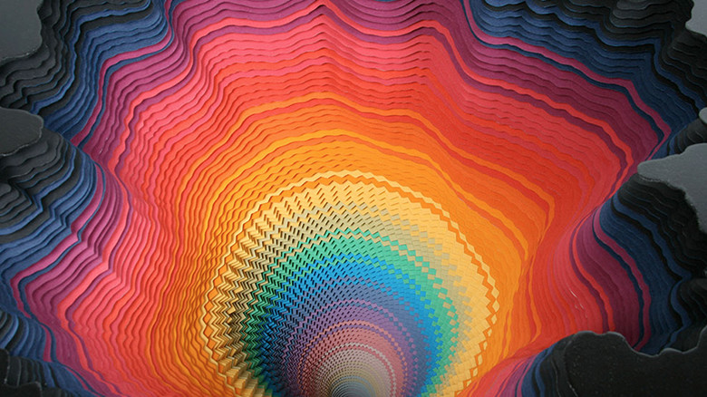

minimal

Jen Stack
http://www.jenstark.com/-どんな人
彩度の高いカラフルな作品を多く制作しているアーティストです。立体作品やアニメーション作品など、幅広いジャンルの作品を多く作っています。
-解説
色紙を切って重ねることによって作られています。ものすごい作業量です。色の順番も単純にグラデーションにせず、寒色の領域と暖色の領域を使い分けたりして、引き込まれるような配色になっています。
-好きなところ
紙の切り抜き方が有機的で好きです。一枚一枚手作業で重ねており、柔らかい表情が出ています。手仕事の良さがでたいい作品だと思います。